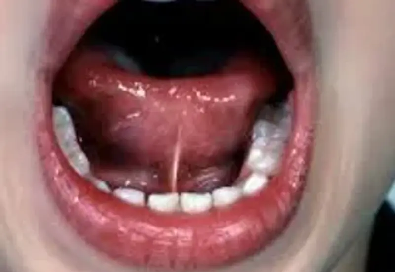
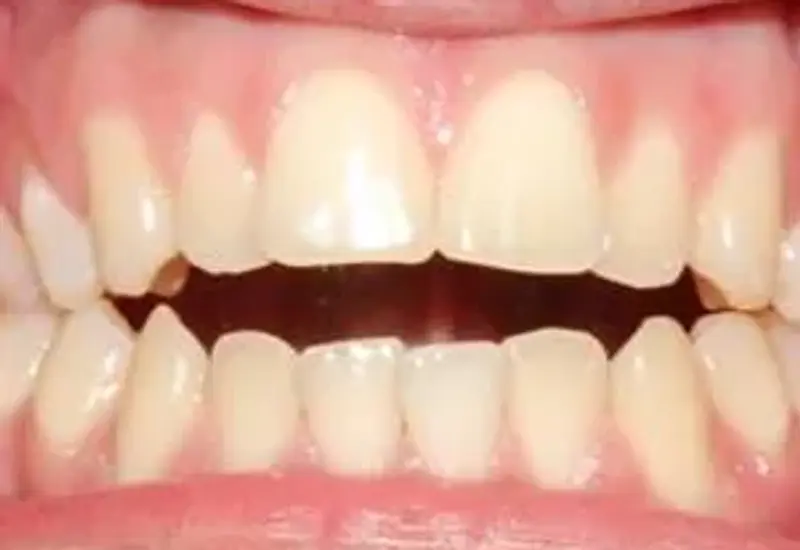
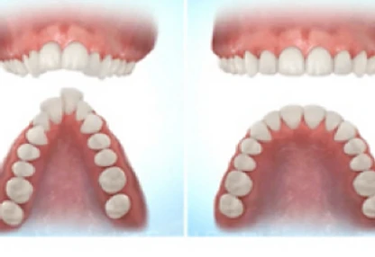
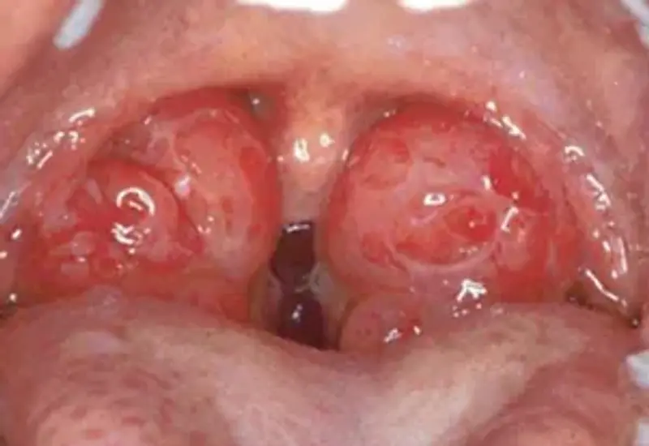
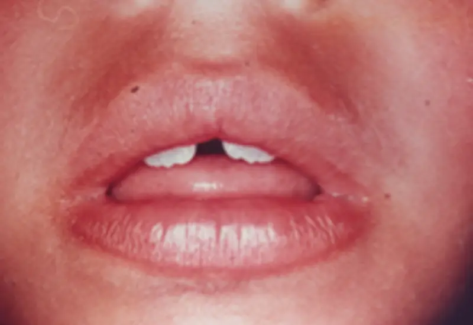
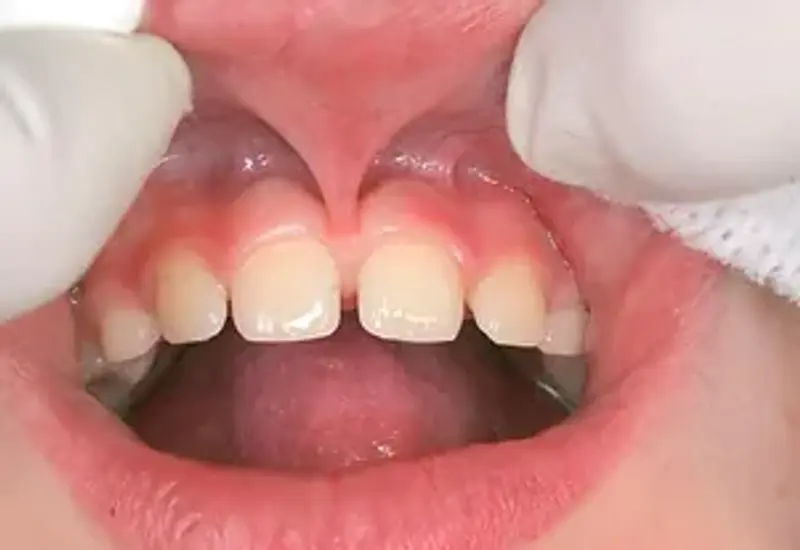
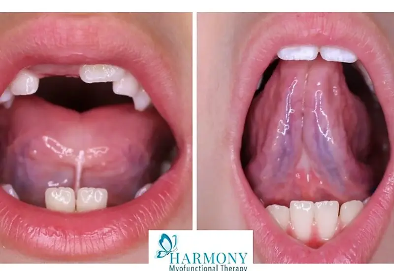
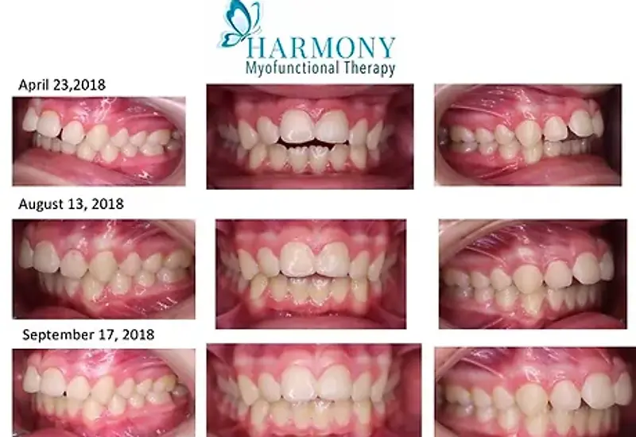

Learn more about orofacial myofunctional therapy and the conditions we help with. Select a topic to expand.
There are many things that can interfere with normal muscle function. Some of those factors include:
Orofacial Myofunctional Disorders (OMD) can play a large role in craniofacial development and can have long-term effects. OMDs can also relate to:
Many speech sound errors are rooted in oral dysfunction, and our integrated approach recognizes this critical connection. Speech production relies on precise coordination of oral structures and muscle function. Before or alongside speech-specific work, addressing underlying oral dysfunction, including resting posture, swallowing patterns, and muscle tone, removes barriers to progress and improves outcomes.
Traditional speech therapy focuses on specific speech targets. Our integrated model examines oral rest posture (is the tongue, lips, and jaw positioned to support clear speech?), oral function (are swallowing and feeding patterns optimized?), and structural readiness (are there myofunctional barriers preventing the speech gains you're working toward?).
We train new patterns of movement to support the development of speech sounds. If specific speech sound work is required, it is incorporated once the improved patterns of movement have been learned.
Examples of some of the orofacial conditions we assess and treat. Click any image to enlarge.






Individual results may vary. Images are for educational purposes and represent specific patients; they do not guarantee similar results.
Chronic mouth breathing is one of the most common signs of orofacial dysfunction. Sealed lips and nasal breathing filter and humidify every breath, support proper tongue resting posture, and contribute to healthy facial growth. When breathing shifts to the mouth, the whole system compensates, which over time can affect facial development, sleep, and airway health.
Tongue-tie is a complex issue that can affect many people unknowingly, and its impact can be very different from person to person. The tongue performs many complex functions such as elevating, retracting, protruding, and lateralizing. When a small piece of tissue holds the tongue down like a rope, a patient may experience difficulty with eating, chewing, posture, swallowing, and speech, as well as stomach upset (an abnormal swallow pattern can contribute to swallowing extra air).
When you see a Certified Orofacial Myologist, we complete a functional assessment to see whether there is a dysfunction of the orofacial muscles and, if a tongue-tie is present, whether it is contributing to abnormal muscle use. If a release (frenectomy) is needed, we work with patients before and after the procedure to optimize the outcome.

An anterior open bite can develop when the tongue is unable to do its job, often because of a tongue-tie. When the tongue's movement is restricted, a patient may adapt to a "backwards swallow pattern" where the tongue pushes forward on the front teeth to complete the swallow.
After the tongue has good mobility, we work on building strength and developing patterns to regain normal function of the tongue and surrounding muscles. Every patient is different and may need the help of multiple practitioners to get the best outcome.

Individual results may vary. Any images shown are for educational purposes and represent specific patients; they do not guarantee similar results.
Thumb and finger sucking can have a negative effect on craniofacial development, and can also negatively impact a child's airway, speaking, and swallowing. Trying to eliminate a habit like thumb or finger sucking can cause a lot of anxiety and stress for the child, and can be exhausting for parents who feel like they've tried every option.
We use a proven, scientific program that is encouraging and fun to eliminate the habit with no harsh appliances. Let us help make this a positive change. Call today to book your appointment.
Myofunctional therapy can play a supporting role in the management of obstructive sleep apnea by improving orofacial muscle tone and function.
Reference: Camacho, M., et al. (2015). Myofunctional therapy to treat obstructive sleep apnea: a systematic review and meta-analysis. Sleep, 38(5), 669-675.
Kristin is a Certified Buteyko Breathing Practitioner and a member of the Buteyko Clinic International.
Named after Dr. Konstantin Buteyko, the Buteyko Method is a series of breathing exercises and guidelines designed to reduce over-breathing (clinically known as chronic hyperventilation). Many people breathe too much, which alters the natural levels of gases in the blood, reduces oxygen delivery to tissues and organs, and causes constriction of the smooth muscles around blood vessels and airways. Bringing breathing volume toward normal, and making the switch from mouth to nose breathing, helps alleviate these problems.
View Kristin's profile at the Buteyko Clinic International →
Feeding a new baby can come with challenges you never expected, and you don't have to work through them alone. As an International Board Certified Lactation Consultant (IBCLC), Kristin offers evidence-based, compassionate support to help you and your baby build a feeding relationship that feels comfortable and sustainable.
She has spent years working alongside dentists caring for infants with tongue-ties and other tethered oral tissues, which brings an added lens to feeding support: an understanding of how the muscles and structures of the mouth can influence how a baby feeds. Support includes:
Families are best served when their providers work together, and Kristin is committed to bridging the gap between lactation, dental, and other healthcare professionals so you receive coordinated care at every stage.
We're happy to help. Reach out and one of our team members will get back to you.